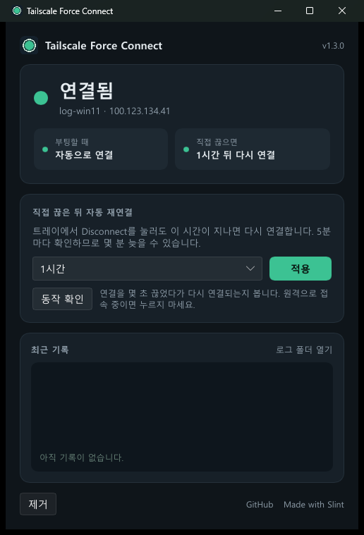

꺼 둔 채로 재부팅해도,
다시 연결됩니다.
Windows에서 Tailscale을 Disconnect 해 둔 채로 재부팅하면, 끊긴 상태 그대로 켜집니다. 이 도구는 부팅할 때마다 SYSTEM 권한으로 다시 연결합니다. 로그인하지 않아도 됩니다. 평소에 직접 끊을 수도 있지만, 1시간이 지나면 자동으로 다시 연결됩니다.
실제 connect.log 형식을 그대로 흉내 낸 시뮬레이션입니다. 20초 대기는 줄여서 보여 줍니다.
관리 창
설치하면 시작 메뉴에 Tailscale Force Connect가 생깁니다. 트레이에 상주하지 않고, 열었을 때만 동작합니다.

- 지금 상태: 연결 여부, Tailscale 기기 이름과 IP. 끊겨 있으면 몇 분 뒤 다시 연결되는지 보여 줍니다.
- 설정: 직접 끊은 뒤 다시 연결할 시간을 고르고 적용합니다. 이때만 UAC 창이 뜹니다.
- 최근 기록: 부팅 때마다, 자동 재연결 때마다 남는 기록을 봅니다.
- 제거: 버튼을 두 번 누르면 모두 지웁니다.
- 업데이트: 열 때 새 버전을 확인하고, 있으면 버튼 한 번으로 설정을 유지한 채 연결을 끊지 않고 업데이트합니다. 받은 파일은 GitHub에 기록된 SHA-256으로 검증합니다.
- Rust와 Slint로 만든 약 8MB짜리 실행 파일입니다. GPU 없이 그려서 원격 데스크톱에서도 열립니다.
설치
Windows 10/11, Tailscale에 로그인된 상태, 관리자 권한이 필요합니다. 어느 방법이든 UAC 창이 한 번 뜹니다.
한 줄로 설치
cmd나 PowerShell에 붙여 넣으면 최신 릴리스를 받아 설치합니다.
powershell -c "irm https://jeiel85.github.io/tailscale-force-connect/get.ps1 | iex"인터넷에서 받은 스크립트를 바로 실행하는 방식입니다. get.ps1 내용 보기
git으로 받기
git clone https://github.com/jeiel85/tailscale-force-connect.git
cd tailscale-force-connect
powershell -ExecutionPolicy Bypass -File .\install.ps1설치가 끝나면 몇 초 동안 일부러 연결을 끊었다가 다시 연결되는지 확인합니다. 출력 끝에 검증 성공이 보이면 설치가 끝난 것입니다. 그 PC에 Tailscale로 원격 접속 중이라면 이 확인을 건너뛰세요. 한 줄 설치는 cmd라면 앞에 set TFC_NOTEST=1 &&를, PowerShell이라면 $env:TFC_NOTEST=1;를 붙이고, zip은 install.cmd -NoTest로 실행합니다.
Windows 빠른 시작이 켜져 있으면 일반 종료 후 전원을 켤 때는 동작하지 않습니다. 재시작과 정전 뒤에는 동작합니다. 설치 스크립트가 빠른 시작을 감지하면 끄는 방법을 알려 줍니다.
관리 콘솔에서 그 기기의 Disable key expiry도 켜 두세요. 키가 만료되면 다시 로그인해야 해서 자동 연결이 되지 않습니다.
공식 기능과 비교
Tailscale 1.84 이상은 비슷한 시스템 정책을 제공합니다. 관리하는 기기가 많다면 공식 정책을 먼저 검토하세요.
| 방법 | 직접 끊기 | 다시 연결되는 때 |
|---|---|---|
AlwaysOn. | 불가 | 끊을 수 없게 막습니다. OverrideWithReason을 켜면 사유를 적고 끊을 수 있습니다. |
Reconnect | 가능 | 정한 시간(예: 30m)이 지나면 다시 연결합니다. 다만 1.104.5에서 tailscale down 뒤에는 재연결되지 않았습니다. |
| 이 도구 | 가능 | 직접 끊으면 약 1시간(바꿀 수 있음) 뒤 다시 연결하고, 부팅할 때는 기다리지 않고 바로 다시 연결합니다. |
공식 문서에는 정책이 재부팅 때 어떻게 동작하는지 따로 적혀 있지 않습니다. Tailscale 시스템 정책 문서
설치되는 것
모두 한 줄로 제거할 수 있습니다.
- 관리 창
C:\Program Files\Tailscale Force Connect\에 관리 창과 스크립트 원본을 두고 시작 메뉴 바로가기를 만듭니다. 이 폴더는 관리자만 쓸 수 있습니다.- 예약 작업
Tailscale Auto Connect: 부팅하고 20초 뒤 SYSTEM으로 실행합니다. 연결될 때까지 10초 간격으로 최대 10분 동안tailscale up을 시도합니다.- 스크립트 폴더
C:\ProgramData\TailscaleAutoConnect\: 관리자만 고칠 수 있고, 일반 사용자는 읽기만 할 수 있습니다.- 로그
- 같은 폴더의
connect.log와 이벤트 뷰어의 응용 프로그램 로그(원본TailscaleForceConnect)에 부팅할 때마다 결과가 남습니다. 연결 실패나 로그인이 필요한 상황(키 만료)은 오류로 기록됩니다. - 자동 재연결 작업
Tailscale Auto Reconnect: SYSTEM으로 5분마다 상태를 확인해, 직접 끊은 상태가 1시간 넘게 이어지면 다시 연결합니다. 트레이 메뉴로 끊었든 명령으로 끊었든 똑같습니다. 시간은install.cmd -ReconnectAfter 30m이나 한 줄 설치 앞의set TFC_RECONNECT_AFTER=30m &&로 바꾸고,0이면 이 작업을 만들지 않습니다.- Unattended 모드
- 꺼져 있으면 켭니다. 그래야 Windows에 로그인하기 전에도 연결됩니다.
- 기존 설정
- 플래그 없이
tailscale up만 실행하므로 exit node, 경로 수락 같은 설정은 바뀌지 않습니다.
제거
예약 작업, 설치 폴더, 이벤트 로그 원본, 이 도구가 설정한 자동 재연결 정책을 지웁니다. 그 밖의 Tailscale 설정은 그대로 남습니다.
한 줄로 제거
어느 방법으로 설치했든 cmd나 PowerShell에 붙여 넣으면 됩니다. UAC 창이 한 번 뜹니다.
powershell -c "irm https://jeiel85.github.io/tailscale-force-connect/remove.ps1 | iex"설치할 때 복사해 둔 제거 스크립트를 실행합니다. remove.ps1 내용 보기
받은 폴더에서 제거
zip이나 git으로 받은 폴더에서 uninstall.cmd를 더블클릭합니다.